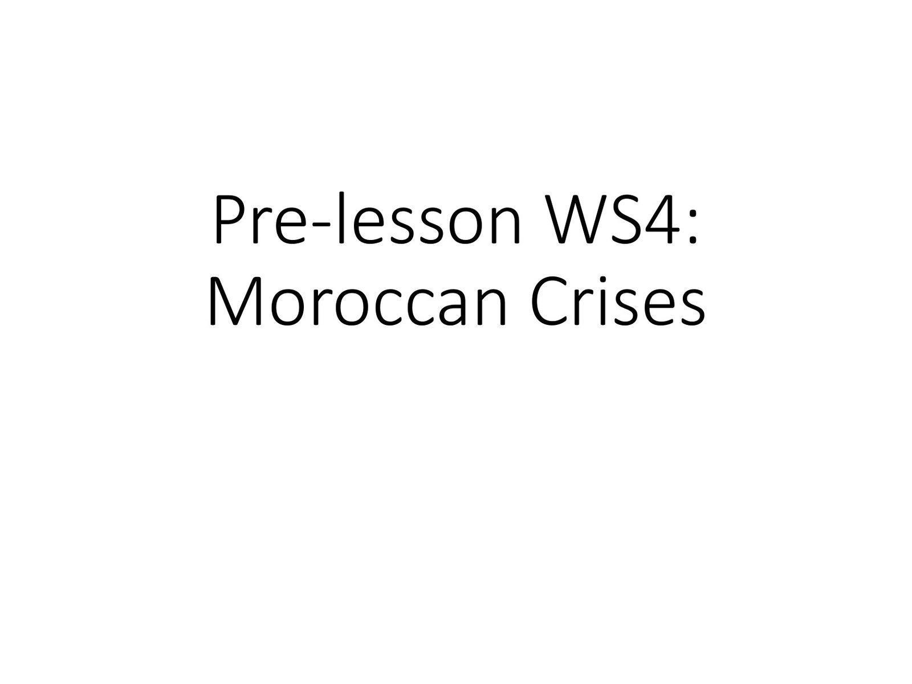
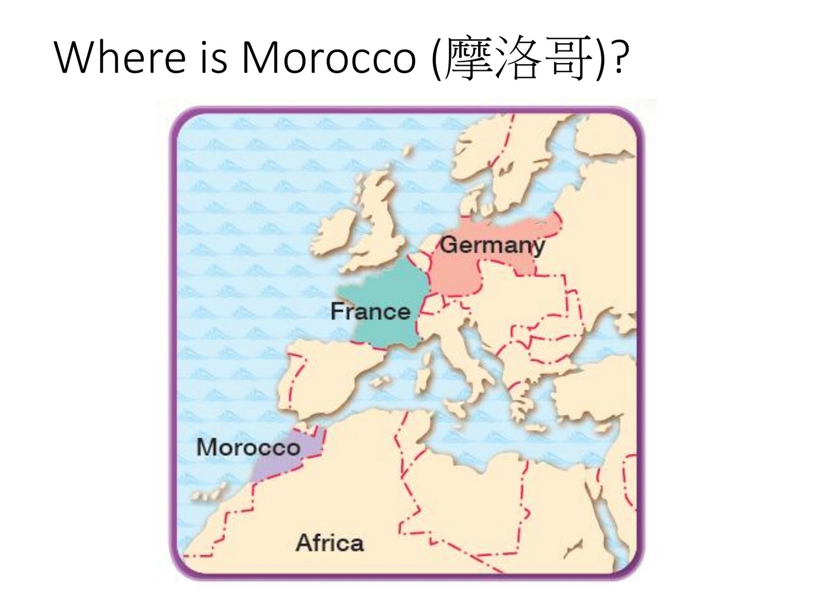
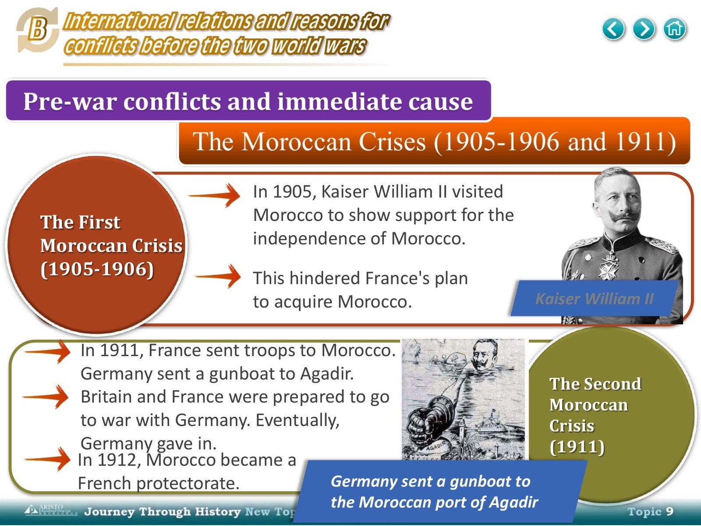
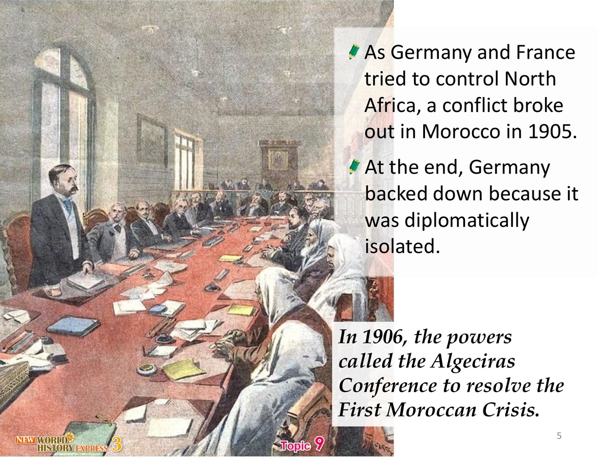
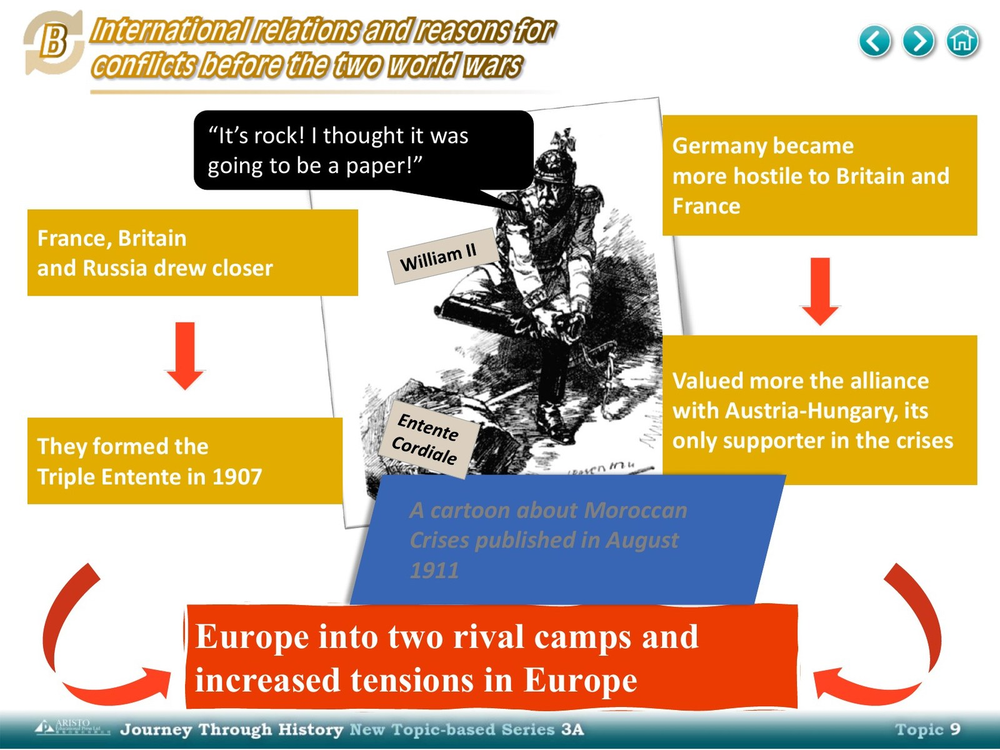
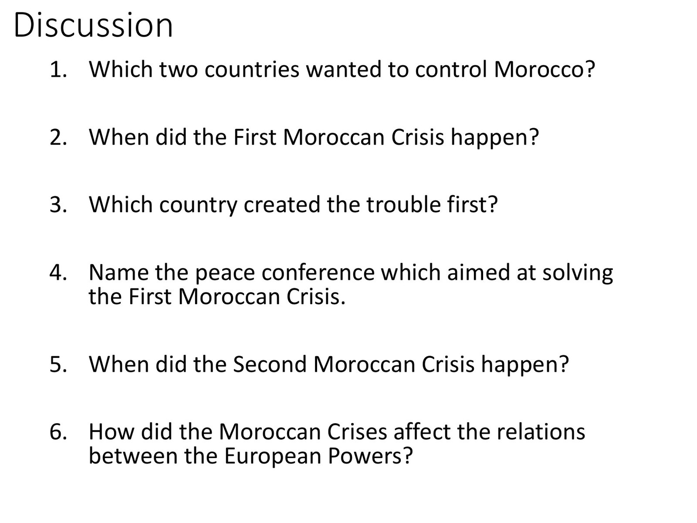

Material (camera on this bit)






Your worksheet (write these)

Teacher says
Press Play. Left = slides, middle = YOUR discussion sheet. One tip at a time. Q6 uses rewrite.
Rewrite board: for Q6 book sentences — 1 keep facts · 2 swap words · 3 order · 4 check (0× three-word copy).
改寫板：Q6 書句用——留事實、換字、調次序、檢查（冇連續三字照抄）。
One tip on the board. Click note = jump to yellow box.